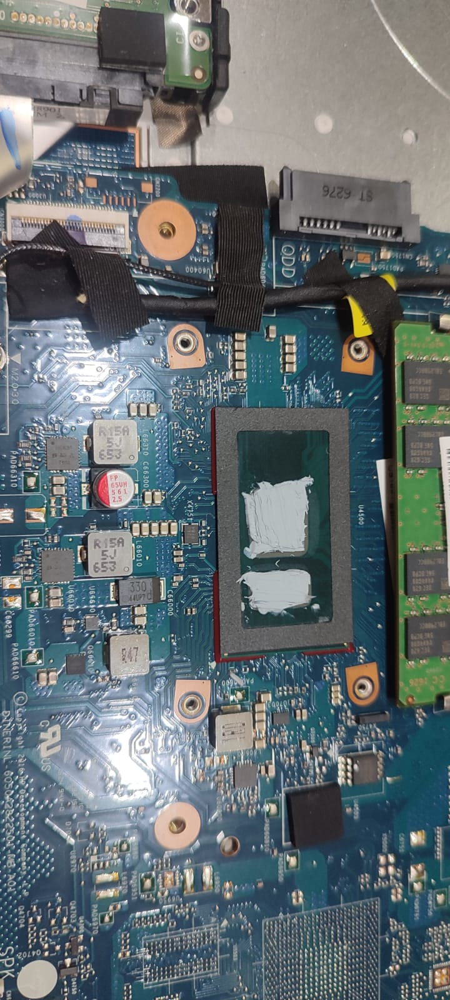
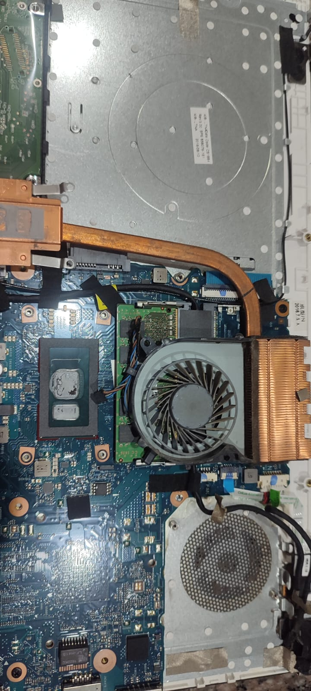
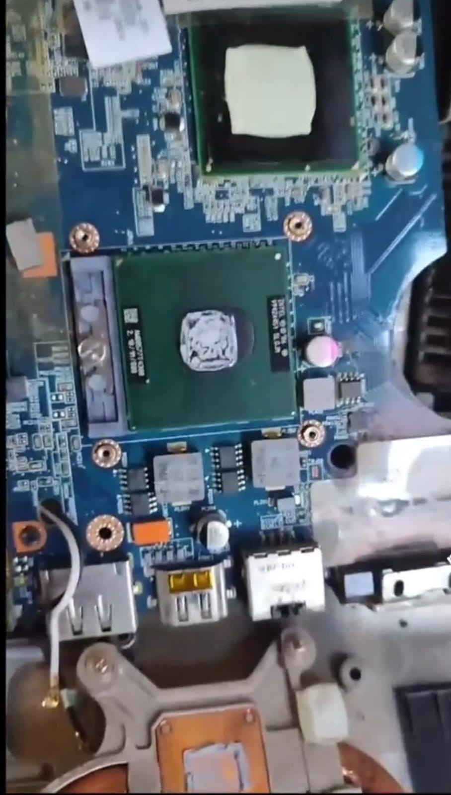

Mantenimiento Preventivo
Limpieza interna, cambio de pasta térmica, optimización y revisión completa del equipo.
Cargando...
Diagnóstico especializado, mantenimiento preventivo, instalación de Windows, optimización de equipos, cambio de SSD, recuperación de información y soporte técnico para hogares y pequeños negocios.

En DV Computadoras ofrecemos soluciones profesionales para computadoras y laptops. Nuestro objetivo es brindar un servicio confiable, transparente y de alta calidad para hogares, estudiantes, profesionales y pequeños negocios.

Identificamos el problema real antes de realizar cualquier reparación.
Cada servicio se realiza con responsabilidad y utilizando procedimientos seguros.
Utilizamos herramientas adecuadas para obtener mejores resultados en cada reparación.
Años de experiencia
Equipos atendidos
Clientes Satisfechos
Soporte Durante Todo el Año
Brindar soluciones tecnológicas confiables mediante un servicio técnico profesional, honesto y de alta calidad.
Convertirnos en uno de los servicios técnicos de mayor confianza en la ciudad gracias a la calidad del trabajo y la atención al cliente.
Honestidad, responsabilidad, puntualidad, compromiso y mejora continua en cada servicio realizado.
Brindamos soporte técnico integral para computadoras y laptops, utilizando herramientas profesionales y procedimientos seguros para garantizar un servicio de calidad.

Limpieza interna, cambio de pasta térmica, optimización y revisión completa del equipo.

Instalación de Windows, controladores, Office y programas esenciales.

Aumenta la velocidad de tu computadora reemplazando el disco duro tradicional por un SSD.

Recuperación de documentos, fotografías y archivos importantes cuando sea técnicamente posible.
Nuestro proceso está diseñado para ofrecer un servicio claro, transparente y eficiente desde la recepción del equipo hasta la entrega.
Registramos el equipo y escuchamos detalladamente el problema presentado.
Revisamos cuidadosamente el equipo para detectar la causa real de la falla.
Realizamos el mantenimiento o reparación utilizando repuestos y procedimientos adecuados.
Probamos el funcionamiento del equipo y lo entregamos listo para su uso.
Algunos equipos que han pasado por nuestro taller. Mantenimiento, reparación, limpieza interna, cambio de pantallas, discos SSD, recuperación de equipos y mucho más.


Cada computadora recibe un diagnóstico profesional. Revisamos cuidadosamente cada componente para ofrecer una solución segura, rápida y garantizada.
Observa cómo realizamos nuestros procesos de mantenimiento, diagnóstico y reparación con herramientas profesionales.
Contáctanos por WhatsApp y recibe una atención rápida y personalizada.
Solicitar AsistenciaLa satisfacción de nuestros clientes es nuestro mayor respaldo.
Excelente atención. Mi laptop quedó funcionando como nueva y la entrega fue muy rápida.
Muy recomendados. Explican claramente el problema antes de reparar el equipo.
Cambiaron el disco duro por un SSD y ahora mi computadora es mucho más rápida.
Sí. Revisamos el equipo para determinar la falla y proponemos la mejor solución antes de realizar cualquier reparación.
Sí. Instalamos Windows, Office, controladores y programas esenciales para dejar el equipo listo para trabajar.
Sí. Es una de las mejoras más recomendadas para aumentar la velocidad del computador.
Dependiendo de la ubicación y del tipo de servicio requerido. También ofrecemos atención en nuestro taller.
Manta - Ecuador
Tu número de contacto
Disponible para consultas
tucorreo@email.com